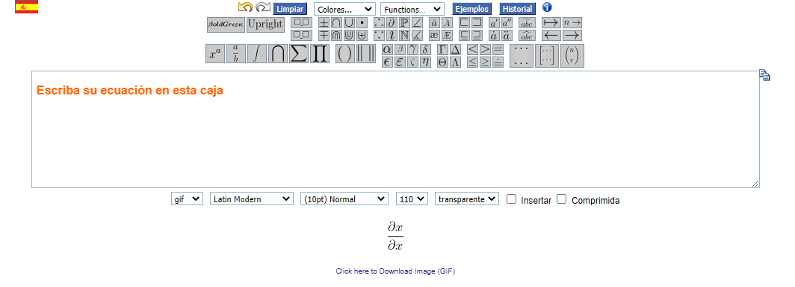
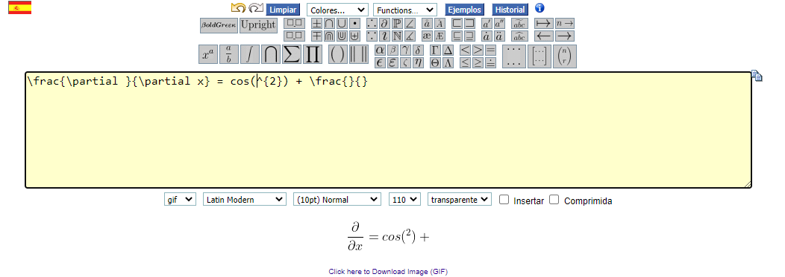
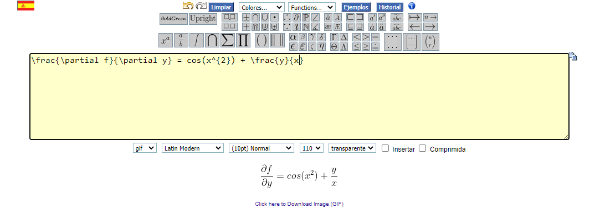

Herramientas de Software
Se muestran en esta página algunas herramientas útiles para hacer de su experiencia en el laboratorio (presencial y virtual) la mejor posible. Se incluirán herramientas matemáticas como también algunos tutoriales útiles.

Uso de Pivot (Vídeo)
A continuación se muestra un vídeo donde se muestra el uso de Pivot para una práctica experimental específica. Sin embargo los métodos mostrados en el vídeo pueden ser útiles para cualquier práctica virtual hecha a través de Pivot
Ayudas de Pivot
En este enlace podrán encontra algunos tutoriales más acerca del uso de Pivot. Sin embargo el que les puede llegar a ser más útil es este, que trata acerca de cómo usar las tablas de datos y cómo obtener gráficas a partir de ellas.
Ecuaciones online (y cómo obtener una imagen de las ecuaciones)
En línea existe una herramienta que permite escribir ecuaciones y convertirlas a distintos formatos de imagen (gif, png, svg, etc). La herramienta se encuentra en este enlace. Dando un vistazo rápido a la interfaz de la página se observa lo siguiente
En la parte superior, en cuadros de fondo gris, se encuentran diversos símbolos matemáticos que pueden componer una ecuación en particular que tengamos en mente. Sin embargo los símbolos que se observan en la imagen no son los únicos posibles. Ubicando el puntero del ratón sobre cada uno de los cuadros grises se observará que se desplegará un menú con más símbolos relacionados a aquel que se encuentra de dicho cuadro gris. Por ejemplo, si ubican el puntero sobre el cuadro gris con el símbolo \(\frac{a}{b}\), observarán que a parte de este símbolo, que permitirá agregar una fracción a la ecuación, hay otras posibilidades, tales como el símbolo de la derivada total \(\frac{d}{dx}\), la derivada parcial \(\frac{\partial}{\partial x}\), la segunda derivada parcial \(\frac{\partial^2}{\partial x^2}\), entre otros.
Si desean por ejemplo escribir la ecuación $$\frac{\partial f}{\partial y} = \cos(x^2) + \frac{y}{x}$$ lo que deben hacer simplemente es buscar los símbolos necesarios (el de la derivada parcial, el igual y el símbolo de fracción) y agregarlos a la ecuación. En el caso de que el símbolo de cierta función no exista (como el del coseno), pueden introducirlo a mano en el cuadro de texto. Si solo agregan los símbolos quedará algo así
Como pueden ver, la ecuación solo insertando los símbolos queda incompleta y en algunos casos hay que cambiar algunas variables que vienen por defecto. Esto se logra insertando o cambiando a mano lo que haga falta. La versión final de la ecuación que necesitamos es la siguiente
Como observan, el resultado obtenido es igual al que queríamos en principio. Una vez estén conformes con el resultado pueden descargar la ecuación como imagen haciendo click sobre el texto en azul que dice Click here to Download Image, no sin antes escoger el formato. En uno de los cuadros abajo del recuadro amarillo principal (en la imagen anterior) observarán la palabra gif. Si hacen click sobre ese recuadro podrán escoger el formato en el que quieran obtener la imagen (preferiblemente png o jpg) y ahora si podrán descargar la imagen con la ecuación.